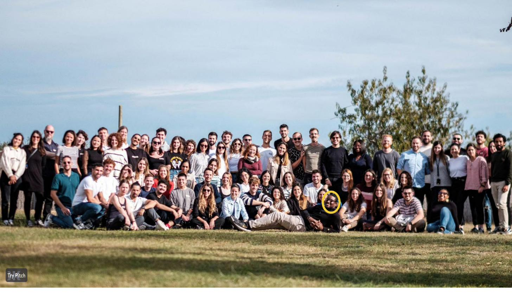

Glovo is one of Europe's largest quick-commerce platforms. I led the global UX organization, 100+ people across 25 markets, through a period of aggressive international expansion and a fundamental shift in product strategy toward social commerce.
Scale without chaos
When I joined, the UX org had grown faster than its infrastructure. Teams were duplicating work, design quality varied wildly by market, and there was no shared quality standard. We had the headcount. What we didn't have was alignment.
Building the machine
We rebuilt the organizational operating model: a quality excellence (QX) program that moved Glovo's quality score from 12 to 81.5 in 18 months. This wasn't a rebrand: it was a systematic shift in how teams researched, designed, and validated work before shipping, kickstarting global UX research and dogfooding practices that simply hadn't existed at that scale before.

I also led two company-wide hackathons with our CPO and CEO in the room, rapidly iterating on the homepage, order tracking, social shopping, shared payment, product catalogue discovery, and loyalty program. Six product surfaces reshaped in days rather than quarters, with executive buy-in baked in from the first prototype.

On the product side, we led the design of Glovo's social commerce expansion, bringing new ad formats, influencer commerce surfaces, and ROAS-linked creative tools to 25 markets simultaneously. Personalization work in CRM and promotions lifted new customer acquisition by 15% and retention by 20%. The result: 5× ad ROAS in the first year.

On the efficiency side, I led a universal font-replacement project across the entire product: swapping a costly licensed typeface for a self-hosted, more accessible alternative and saving €500k in annual licensing costs. Separately, a systematic rearchitecting of our post-order and help flows cut support contacts by 18%.

On leading at scale
Running a 100-person org means most of your impact is indirect. You set direction, build systems, hire well, and get out of the way. The QX program worked not because I designed it alone, but because we built the infrastructure for 100 people to design better, faster, and more consistently.
The social commerce bet kept compounding
In October 2024, over a year after I moved on, Glovo shipped what it called its biggest product overhaul since 2016, built directly on the social commerce direction our team set: a suite of features merging social networking with food discovery. TechCrunch and Tech.eu both covered the launch as the first food-delivery app in the industry to merge social networking with commerce.
The update shipped three connected features: Picks, letting users save and share curated restaurant and dish lists for occasions like office lunches or dinner with friends; a social graph, matching a user's phone contacts to friends already on Glovo so they can follow each other's recommendations; and a video discovery feed, letting restaurant partners upload short food-prep videos directly into the app. Glovo's leadership cited a stat that shaped much of the original social commerce strategy: 55% of customers already turn to social platforms for food inspiration before they ever open a delivery app. The rollout started in Barcelona before expanding across Spain and, eventually, the other 22 markets Glovo operates in.
Seeing a strategy I helped set keep shipping and scaling more than a year after I left is the clearest signal I know that the underlying bet, and the organizational muscle we built to execute on it, was sound.